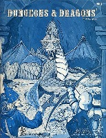
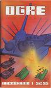
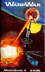
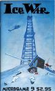
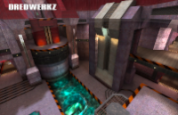
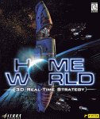

Lunchbox Games
In 1976, a trainee teacher doing a rotation at my high school introduced several of us to the world of tabletop wargames. He was into World War II tank battles, but we were mostly science fiction fans, so it wasn't long before we discovered Dungeons & Dragons. We played at lunch hour, and, being small-town boys in our mid-teens, skipped all the role-playing nonsense and went straight for the "good stuff": traps, battles, spells, and gold.

The same store in Victoria that sold D&D stuff (there was only one at the time) also stocked a few SF games. We played Star Fleet Battles (a game of ship-to-ship combat) and Stellar Conquest (a turn-based empire-building game) for a while, but then we discovered Metagaming's Microgame series, and never looked back. For half the cost of a record, we could get a paper-sized game that took about 45 minutes to play—perfect for lunch breaks.
|  |  |  |
Ogre was an early favorite. The simplest scenario pitted a nuclear-powered supertank against a mixed force of conventional tanks, armored hovercraft, artillery, and infantry. There wasn't much strategy: the supertank player made a beeline for the objective while the other player sacrificed one unit after another to wear it down. Once the Ogre player had a few support units, though, the game became a lot more interesting. Should the Ogre charge forward as before, or provide covering fire for lighter units? Should the conventionally-armed player take a lot of artillery (powerful but unable to move), try to swarm the Ogre with hovercraft, or roll out some heavy tanks and hope to roll sixes? For the first time, I started to understand what the word "strategy" actually meant.
Metagaming produced almost two dozen Microgames before going bust. My personal favorites, WarpWar and IceWar, both had that knockout combination of strategy and lunch hour playtime. In WarpWar, players had to choose between building ships now or investing in R&D to build better ships later, with the added twist that each successive generation of ships was more powerful than its predecessors. It took several turns for ships to travel from one player's home planet to the other's, so the more successful you were, the more of a disadvantage your ships were at the next time they fought.
IceWar had several strategic twists, either of which would have made a lesser game interesting. The Russian force (which was attacking the Prudhoe Bay oilfiends across the Arctic icecap—remember, this was the 1970s) was invisible to the Americans until spotted by scouts or satellites, neither of which was subsequently useful. The Russian therefore had to pick a route that avoided detection, while the American had to decide how much to spend on early warning gear, and how much to spend on battle forces that could only be brought into play once the Russians were visible. The Russian player also had to choose a mix of forces (fast and vulnerable or slower-moving and more powerful) while the American could almost double the size of the defending force by investing in reserves, with the caveat that those reserves would arrive piecemeal during the fight. We played variation after variation, but never found a "one size beats all" strategy for either side.
Then I went to university, where majority opinion held that D&D and board games were for geeks. I was insecure enough about my geekiness to be swayed by that, and it was 15 years before I really got into games again. When I did, I more than made up for lost time with Quake III and Homeworld.

Quake III was an office game. Every Thursday, someone at Nevex would fire up a server and we'd spend an hour or so fragging each other. There was no strategy to speak of: you ran, you shot people, you swore a lot, and you respawned. I was never as good with a railgun as some people, but I still know the best spot for sniping on the Dredwerkz map.

And Homeworld: saints and small mercies, if there has ever been a better game, I haven't found it. Do you race for heavy ships, taking the risk that your opponent will swarm you with smaller, cheaper ones before you're ready? Do you burn ships attacking enemy resource collectors? Do you invest in fringe technologies like minelayers or cloak generators and hope to catch your enemy flatfooted? I still remember the first time I ran into the combination of mines, cloaks, and salvage corvettes; I remember even more vividly my next game against the same player, who took out my resource collectors with a swarm of attack bombers, then picked off my frigates one by one while I was frantically trying to decide how many of them to recycle in order to replace the lost RCs. He wasn't playing chess or a first-person shooter: he was playing poker, and I was falling for his bluffs one after another.
I still remember my last game, too. It was a carrier duel, which meant faster and more fluid play. We slugged it out until he was down to just a handful of fighters and a couple of support frigates. As I closed in for the kill, he rammed the frigates into my carrier, and boom, I was done. I looked for him online again a couple of nights later, and a few days after that, but never saw him again.
The people I did see were ones I didn't particularly want to play. Online anonymity seems to bring out the worst in some people, and by 2005 (six years after Homeworld's release) it seemed that almost everyone I bumped into used racial insults the way I'd use "please" and "hello". I've always cared more about the social side of gaming than about winning for its own sake: I'd rather lose and shake hands than win and be sworn at. Now that my daughter is old enough for me to get a full night's sleep more often than not, I've tried getting back into a couple of games (Yahoo! Chess and Quake Online), but a couple or three weeks is always enough for me to decide that ignoring or putting up with abuse is a higher admission price than I'm willing to pay.
I'm not willing to give up yet, though. The Internet is a big place; there just has to be a game out there somewhere that combines fantasy or SF elements with real strategizing and a 30-to-45 minute playing time in an environment where people treat one another with at least a modicum of respect. Damned if I know how to find it, though; "courtesy" and "playability" aren't things Google knows how to search for (at least, not yet). Maybe one day one of my ex-students will drop me a line to say, "Hey, try this out." Until then, may your thieves always be stealthy, your hovercraft nimble, and your mothership safe from harm.